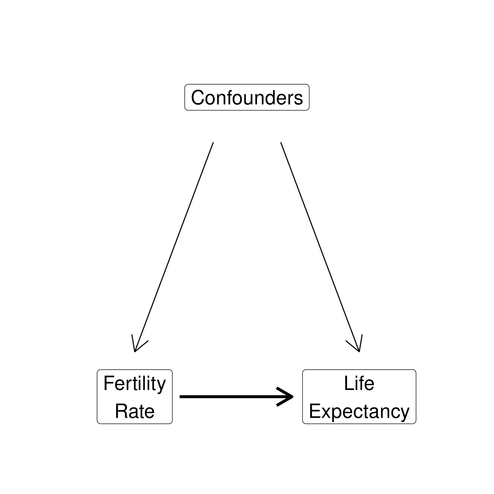
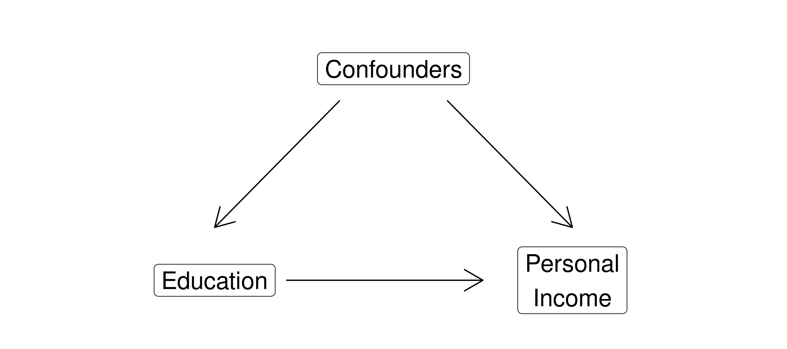

Multiple Regression
Justin Leinaweaver (Spring 2024)
Assumes “regression to the mean”
Quantifies the relationship between variables
Uses ALL of the data
Provides estimates of uncertainty
Can include a confounder
Can include more than one confounder
Can be adjusted for non-linear effects
Do higher fertility rates lower average life expectancies around the world?

Ross, Catherine E. (1990) Work, Family and Well-being in the United States. Inter-university Consortium for Political and Social Research (ICPSR).
This study measures the effects of various social conditions on individuals’ physical and mental health.

Possible Confounders: Height, weight, gender, ethnicity, walk, exercise, smokenow, tense, angry, age
Are powerful states more likely to respect the human rights of their citizens?